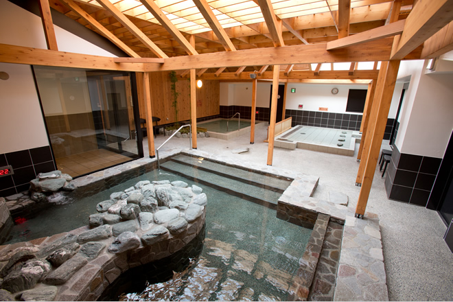
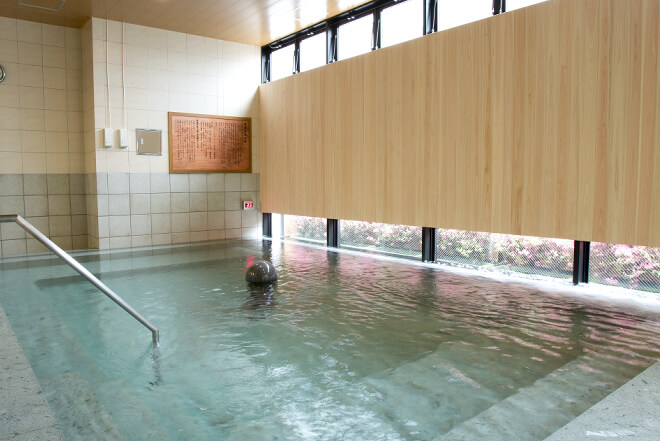
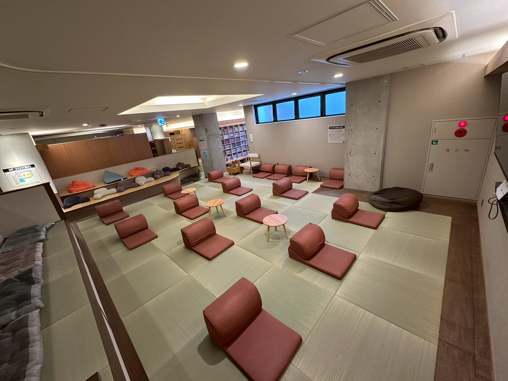
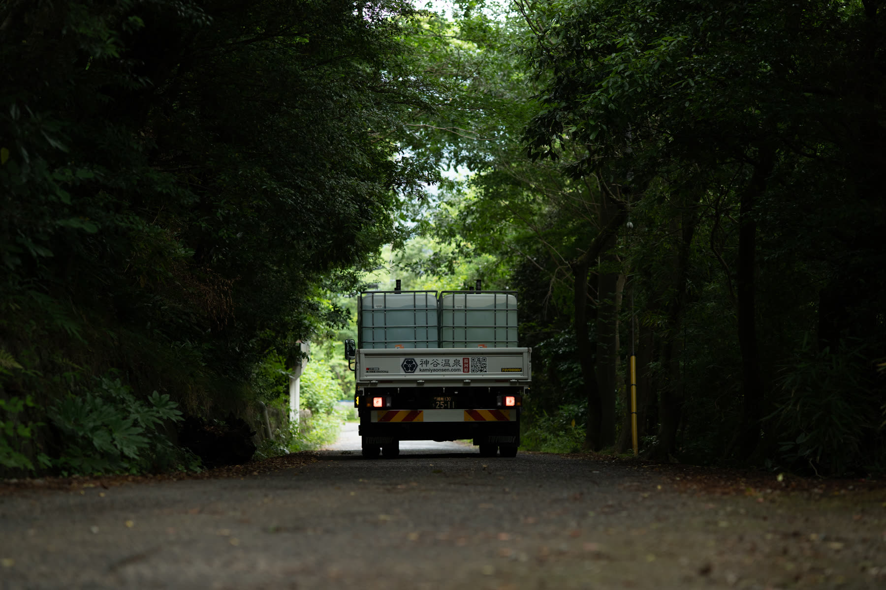

屋上
空の下の、4つの湯。
「らくの湯」、炭酸風呂、寝ころび湯。ドライサウナと水風呂もこの階です。深夜3時まであいているので、夜の空の下でも入れます。男女別。
らくの湯露天
炭酸風呂疲れ・肩こりに
寝ころび湯寝ころんで
ドライサウナあり
水風呂あり
ご利用深夜 3:00 まで

制作中のたたき台です（2026-11-17）。料金・写真・文言は、まだ確定していません。
屋上から1階まで。どの階で何ができるかを、先にお見せします。
イラスト：湯の面
階をおすと、そこへ移ります。
「らくの湯」、炭酸風呂、寝ころび湯。ドライサウナと水風呂もこの階です。深夜3時まであいているので、夜の空の下でも入れます。男女別。

奥湯河原の神谷温泉から毎日運んでくる湯を張ります。無色透明で、さらさらとやわらかい肌あたり。大人が腰までゆったり浸かれる深さです。男女別。

湯から上がって長居する階です。畳の小上がり「自遊広場」、エアウィーヴのリクライニングコーナー、仕事もできる縁側ラウンジ、マンガ2万冊以上のライブラリー。マッサージチェアは無料です。
マンガの一部は電子書籍です。

靴を預けて受付へ。お帰りはここで精算します。食事処「百年ダイニング」、ボディ＆フット「和路（なごみみち）」、お子さま連れの「らくらく広場」も、この階です。

